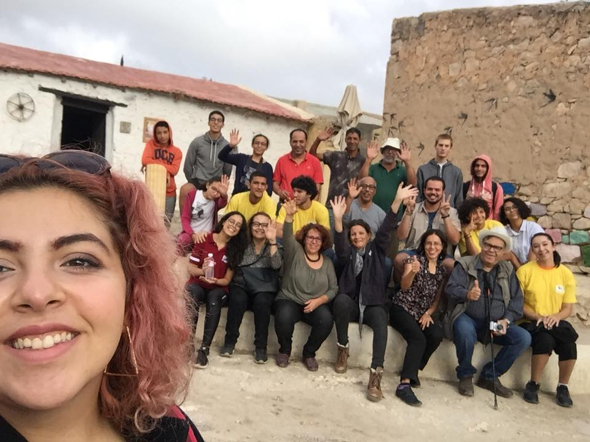
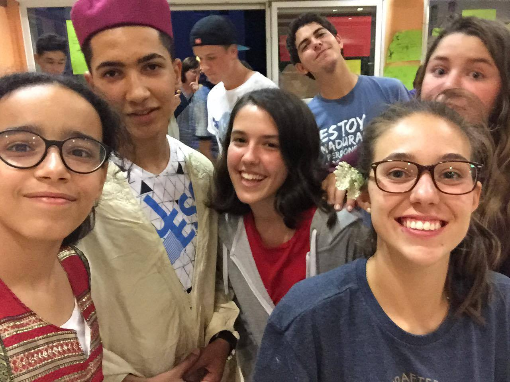

I attended 5 years of arab music training and I learned how to play the guitar and the violon. Plus, I performed with an orchestra designed for high school and university students as a guitarist.
Volunteer at "Association des Amis du Belvédère"

Association des Amis du Belvédère is a tunisian non-profit volunteer-driven environmental association that aims to preserve the natural and cultural heritage of Belvedere Garden. As a volunteer, I organized enviromental workshops for primary school students during winter and summer vacations.
Participant at Erasmus+ interculturality camp in Besançon, France

Since I am a volunteer at "Association des Amis du Belvédère", I participated in an Interculturality camp in Besancon , France. The main topic of our camp was "Gender equality". Me and many other volunteers represented our country and the association. By interacting with the other participants, I learned more about other europenien countries like Spain, Macedonia, Estonia...
Student at GoMyCode
During summer 2017, I was selected to participate in a summer coding camp organized by MentorNations and GoMyCode.
GoMyCode is a 21st century school that teaches youth :
1. Coding and the princples of software development using the latest technologies
2. Shipping real technology products from design to monetization
3. Soft skills like collaboration, team work, critical thinking
MentorNations is a community of volunteers who believe digital literacy is a human right. Their main goal is to empower underserved youth to transform their lives through technology.
During 3 weeks, I have made lots of friends from all over Tunisia’s 24 governorates and learned how to develop a mobile game using C# as a programming language and Unity as a cross-platform fame engine.
Participant at SparkDays2018
SparkDays is an entreupreunarial competition organized by “Fondation Biat pour la
jeunesse”. With collaboration of 3 other participants, we made a project that aims
to improve the tunisian educational system. We ended up winning the third price.
Thanks to this competition, I improved my soft skills like collaboration and team
work.
Finalist at IQ Challenge
IQ challenge is a national inter-high school competition that targets high
students from all over Tunisia’s 24 governorates. This is a competition of
intelligence and logic consisting of three rounds. The first and second rounds
took place online remotely as a series of multiple-choice questions. The final
round brought together the selected candidates in order to solve the questions
on paper. I ended being finalist and the first one of my high school.
Founding member and head of community service events at FBLA Tunisia
I’m a founding member and head of community service and business events at
FBLA Tunisia. FBLA, otherwise known as Future Bussiness Leaders of America,
is one of the largest student organizations in the United States and the
largest career student organization in the world. FBLA Tunisia is the first
FBLA chapter in North Africa and the Middle East. Our mission is to bring
business and education together in a positive working relationship through
innovative leadership and career development programs and community service events.
As the head of community service and bussiness events, I organized events
like cleanups... I will soon apply dor the post of Vice president of this
prestigious organisation
Delegate of Tunisia at Harvard Model United Nations Dubai 2020 Online
I was very proud and honored to be my country’s delegate at Harvard Model
United Nations Dubai 2020 Online,one of the most prestigious MUNs in the world that
gathered a very big number of delegates from many different countries, in the social,
cultural and humanitarian
committee.I learned more about diplomacy, international relations, and the
United Nations. MUN involves and teaches participants speaking, debating,
and writing skills, in addition to critical thinking, teamwork, and leadership
abilities.
Summer Inter at 'Alliance Française de Tunis'
During summer 2020, I worked for a month as a summer intern at ‘ Alliance française
de Tunis ‘. AF is an international organization that aims to promote the French
language and francophone culture around the world.
As a summer intern, my main tasks were :
cleaning
answering the phone
filming the theatre club
helping children learn french and many other different tasks


.jpg)